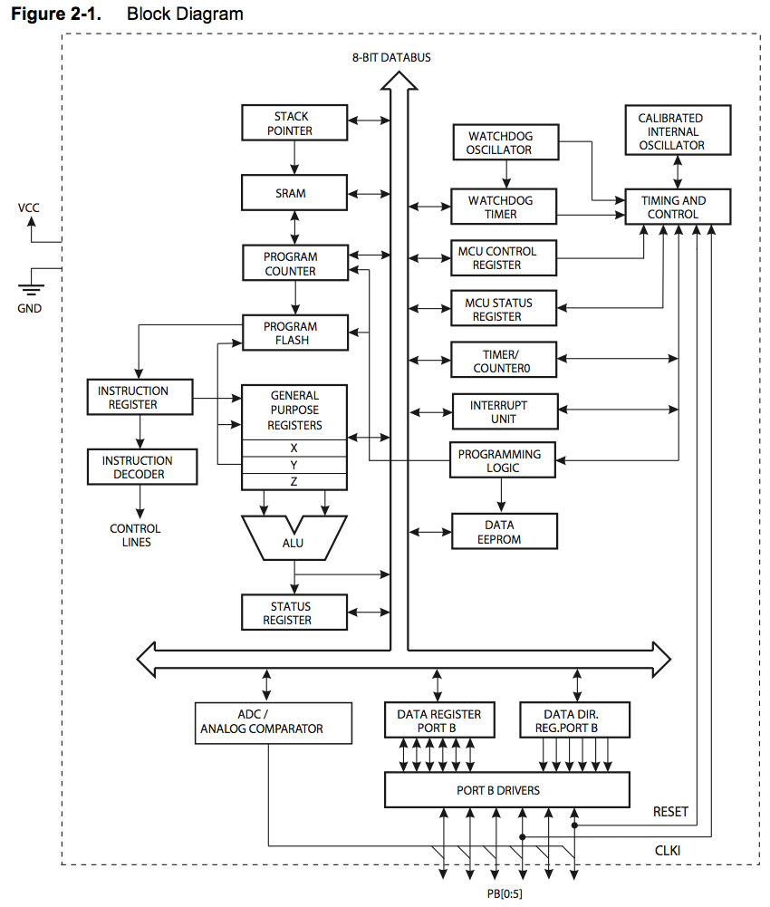
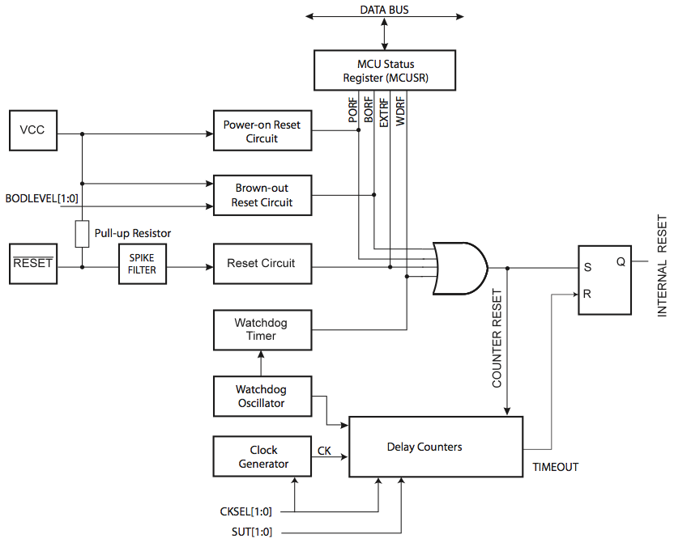
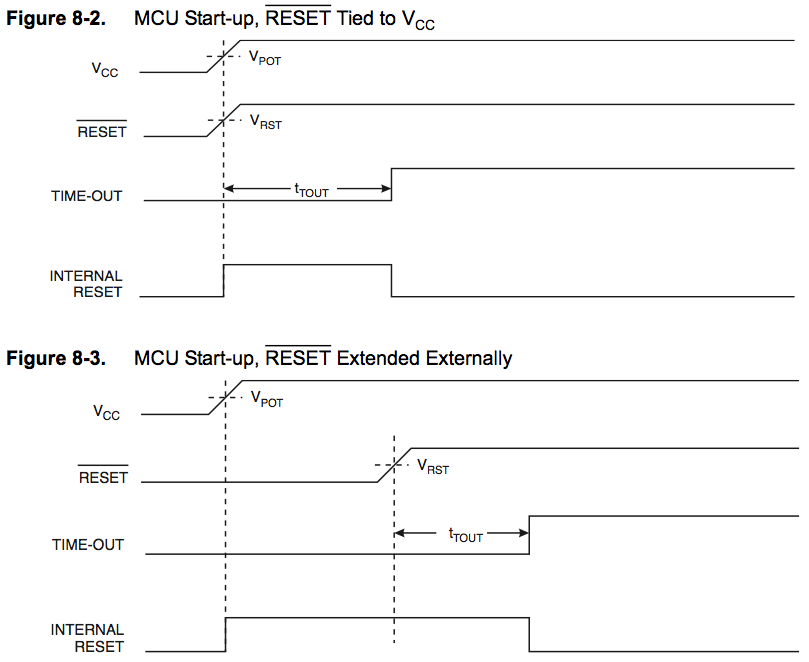
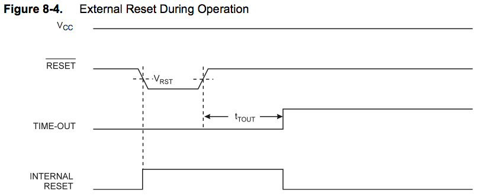
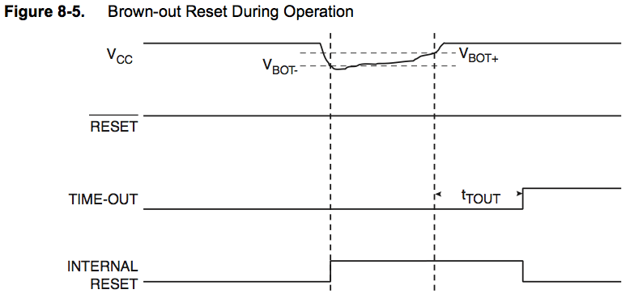
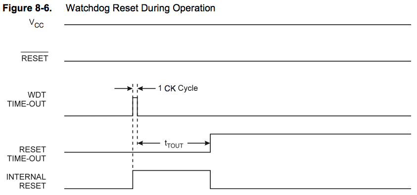
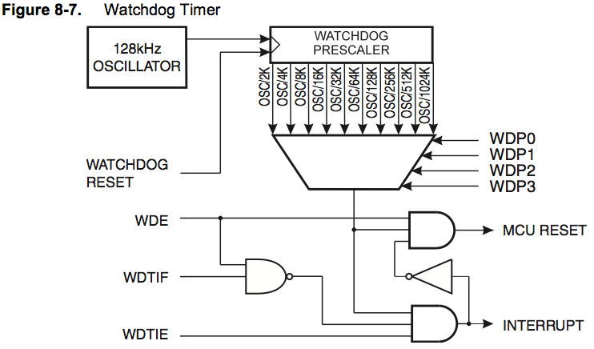

| 译者: | gashero |
|---|---|
| 日期: | 2012-02-17 |
目录
非常便宜的一款芯片，争取更多玩法。
参考文献：ATtiny13a Datasheet PDF(4386936Byte) Rev:8216E-AVR-07/10
引脚配置 8-PDIP/SOIC:
(PCINT5,/RESET,ADC0/dW) PB5 | U | Vcc
(PCINT3/CLKI/ADC3) PB3 | | PB2 (SCK/ADC1/T0/PCINT2)
(PCINT4/ADC2) PB4 | | PB1 (MISO/AIN1/OC0B/INT0/PCINT1)
GND | | PB0 (MOSI/AIN0/OC0A/PCINT0)
20-QFN/MLF和10-QFN/MLF见@page 2。
端口B有内置上拉电阻。
低电平输入/RESET产生复位。
ATtiny13A是低功耗CMOS 8bit单片机，基于AVR增强RISC架构。通过强大的单周期指令，ATtiny13A可以达到1MIPS/MHz的性能，允许设计者优化功耗和性能。
系统框图：
AVR核心包含了丰富的指令集，和32个通用寄存器。所有32个寄存器都直接连接到了ALU，允许两个独立寄存器在单一指令单一周期中访问。结果架构使得比传统CISC快了10倍以上。
@page 5-6
@page 7-14
AVR架构有两个主要的存储空间，数据存储器和程序存储器。另外还提供了EEPROM存储器。所有存储器都是线性和规则的。
1KB的片内程序存储器，存储一般是32bit的指令，空间组织为512x16。
程序指针(Program Counter = PC)是9bit宽的，这样可以指定512个程序存储器位置。
常量表可以在整个程序存储器内定位，查看 LPM 指令。
地址范围是0x0000 - 0x01ff。
低160个数据存储地址，同时包含寄存器、I/O存储和内部数据SRAM。最开始的32个位置是寄存器，接下来64个位置是标准I/O存储，最后64个位置是SRAM。
有5种不同的寻址模式：
在寄存器中R26到R31是作为简介寻址的寄存器。直接寻址可以直接覆盖整个数据空间。
Indirect with Displacement模式可以覆盖从基地址开始的63个地址位，通过Y-或Z-寄存器。
当使用寄存器间接寻址模式，并使用pre-decrement或post-increment时，地址寄存器X、Y、Z作为减量或增量。
数据存储器映射:
32 Registers 0x0000-0x001f 64 I/O Registers 0x0020-0x005f Internal SRAM(64x8) 0x0060-0x009f
@page 16-22
@page 23-24
通过熔丝位可以选择不同的时钟。时钟选择：
CPU从掉电或省电模式环形时，使用选定时钟启动，确保在开始运行前时钟的稳定。当CPU从复位启动时，有个附加的延迟，允许电源到达稳定状态。看门狗振荡器提供启动时间的计时。可用的WDT震荡周期如下：
@page 24-29
复位时，所有IO寄存器都设置为初始化值，程序开始从复位向量执行。复位向量处的指令必须是RJMP，相对跳转，跳到实际的复位程序。如果程序没有启用中断源，中断向量就不会使用，程序代码就可以放在这里。复位逻辑如下图。
IO端口会在复位中断时立即复位到其初始状态，此时无需时钟。
在所有复位中断源变得无效时，会有个延时计数器来延迟内部复位。这允许电源达到稳定状态后再操作。这个超时周期由熔丝SUT和CKSEL控制。
ATtiny13A有4中复位源：
@wait
上电复位时序图：
外部复位时序图：
掉电复位时序图：
看门狗复位时序图：
@page 36-38
@page 38-38
ATtiny13A有内置增强型看门狗定时器(WDT)。是一个定时器，基于片内128KHz振荡器。当计数器到达指定超时值，就会给出中断或系统复位。在正常操作模式，会要求系统使用WDR-Watchdog Timer Reset指令来重新开始计数器，避免到达超时。如果系统没有重启计数器，就会产生中断或系统复位。
看门狗定时器逻辑：
在中断模式，WDT会在超时时给出中断。这个中断可用于唤醒设备，或生成系统定时器。一个例子是限制特定操作时间，当操作执行时间过长时就中断掉。在系统复位模式，WDT会在超时时给出系统复位。典型的用户避免代码跑飞时的系统挂起。在第三种模式，中断和系统复位模式，合并了两者，首先给出中断，然后执行系统复位。允许一个安全的关机，并在系统复位前保存必要的参数。
看门狗对应的WDTON熔丝总是会导致系统复位模式。如果熔丝启用系统复位模式WDE和中断模式WDTIE。想要确保安全，应该按照如下顺序设置看门狗。清除WDE和改变超时配置如下：
如下代码例子展示了汇编和C代码来关闭看门狗定时器。例子假设中断已经被控制(禁用了全局中断)所以执行这些指令时不会有中断发生。
汇编代码:
WDT_off:
;关闭全局中断
cli
;复位看门狗定时器
wdr
;清除MCUSR的WDRF
in r16,MCUSR
andi r16,(0xff-(1<<WDRF))
out MCUSR,r16
;写逻辑1到WDCE和WDE，保持预分频器的值
in r16,WDTCR
ori r16,(1<<WDCE)|(1<<WDE)
out WDTCR,r16
;关闭WDT
ldi r16,(0<<WDE)
out WDTCR,r16
;打开全局中断
sei
ret
C代码:
void WDT_off(void) {
__disable_interrupt();
__watchdog_reset();
//清除WDRF
MCUSR &= ~(1<<WDRF);
//写逻辑1到WDCE和WDE，保持预分频器的值
WDTCR |= (1<<WDCE)|(1<<WDE);
//关闭WDT
WDTCR=0x00;
__enable_interrupt();
}
如果WDT意外被打开，例如因为野指针或掉电，设备会被复位而看门狗定时器会移植保持启用。如果代码没有处理看门狗，就会导致不停的超时复位循环。要避免该情况，应用应该总是在初始化过程中清除看门狗系统复位标志(WDRF)和WDE位，哪怕还没有使用看门狗。
如下代码展示汇编和C代码改变看门狗的超时值：
汇编:
WDT_Prescaler_Change:
;关闭全局中断
cli
;复位看门狗定时器
wdr
;开始计数序列
in r16,WDTCR
ori r16,(1<<WDCE)|(1<<WDE)
out WDTCR,r16
;在4周期设置新的值，新的预分频器位0.5秒
ldi r16,(1<<WDE)|(1<<WDP2)|(1<<WDP0)
out WDTCR,r16
;完成，使用了2个周期
;打开全局中断
sei
ret
C代码:
void WDT_Prescaler_Change(void) {
__disable_interrupt();
__watchdog_reset();
//开始定时序列
WDTCR |= (1<<WDCE)|(1<<WDE);
//设置新的预分频值，0.5秒
WDTCR = (1<<WDE)|(1<<WDP2)|(1<<WDP0);
__enable_interrupt();
}
看门狗应该在修改WDP位之前复位，因为在修改WDP位之前就超时会导致更短的超时周期。
MCUSR-MCU状态寄存器
| Bit | 7 | 6 | 5 | 4 | 3 | 2 | 1 | 0 |
| 0x34 | -- | -- | -- | -- | WDRF | BORF | EXTRF | PORF |
| R/W | R | R | R | R | R/W | R/W | R/W | R/W |
| 初始值 | 0 | 0 | 0 | 0 | x | x | x | x |
[7-4:--] 保留。
[3:WDRF] 看门狗复位标志，当看门狗复位发生时值为1，该位的复位会在上电复位，或写逻辑0。
[2:BORF] 掉电复位标志，当掉电复位发生时值为1，该位的复位会在上电复位，或写逻辑0。
[1:EXTRF] 外部复位标志，当外部复位发生时值为1，该位的复位会在上电复位，或写逻辑0。
[0:PORF] 上电复位标志，当上电复位发生时值为1，该位的复位通过写逻辑0实现。
想要使用复位标志来识别复位原因，用户应该尽早读取MCUSR。如果寄存器被另一个复位给清除了，则复位源可以通过检查复位标志实现。
WDTCR-看门狗控制寄存器
| Bit | 7 | 6 | 5 | 4 | 3 | 2 | 1 | 0 |
| 0x21 | WDTIF | WDTIE | WDP3 | WDCE | WDE | WDP2 | WDP1 | WDP0 |
| R/W | RW | RW | RW | RW | RW | RW | RW | RW |
| 初始值 | 0 | 0 | 0 | 0 | x | 0 | 0 | 0 |
[7:WDTIF] 看门狗中断标志。当看门狗中断发生时为1，当执行中断向量时由硬件清除，或写逻辑1来清除。当全局中断打开且WDTIE=1时，会执行中断向量。
[6:WDTIE] 看门狗中断启用。写1，且全局中断打开，就打开了看门狗中断。当WDE=0，看门狗就是在中断模式，看门狗超时时就会调用中断处理。
如果WDE=1，看门狗就是在中断和系统复位模式。第一次超时会设置WDTIF。执行对应中断向量并硬件清除WDTIE和WDTIF(看门狗进入系统复位模式)。这对于保持看门狗的安全有用。如果要保持在中断和系统复位模式，WDTIE必须在每次中断后写1。这不应该在中断函数里，因为这在系统复位模式不安全。如果中断在下次超时前没有执行，就会执行系统复位。
看门狗配置：
| WDTON | WDE | WDTIE | 模式 | 超时动作 |
| 1 | 0 | 0 | 停止 | 无 |
| 1 | 0 | 1 | 中断模式 | 中断 |
| 1 | 1 | 0 | 系统复位模式 | 复位 |
| 1 | 1 | 1 | 中断和系统复位 | 中断，然后去系统复位 |
| 0 | x | x | 系统复位模式 | 复位 |
WDTON熔丝的0表示已编程，1表示未编程。
[4:WDCE] 看门狗修改启用。用于修改WDE和预分频位的时间序列中使用。要清除WDE位，或修改预分频值，则WDCE必须写1。一旦写1，硬件会自动在4个周期后清除WDCE。
[3:WDE] 看门狗系统复位启用。WDE会被MCUSR的WDRF复写，这意味着WDRF=1时，WDE也总是1，WDRF必须先清除。这个功能确保多个复位导致的失败，会在失败后安全的启动。
[5,2-0:WDP3-0] ：看门狗预分频器3-0。决定了看门狗预分频因子。如下：
| WDP3-0 | 分频周期 | 典型超时(Vcc=5.0V) |
| 0000 | 2K | 16mS |
| 0001 | 4K | 32mS |
| 0010 | 8K | 64mS |
| 0011 | 16K | 0.125 S |
| 0100 | 32K | 0.25 S |
| 0101 | 64K | 0.5S |
| 0110 | 128K | 1.0 S |
| 0111 | 256K | 2.0 S |
| 1000 | 512K | 4.0 S |
| 1001 | 1024K | 8.0 S |
| 1010 | x | x |
| 1011 | x | x |
| 1100 | x | x |
| 1101 | x | x |
| 1110 | x | x |
| 1111 | x | x |
中断向量表：
| 向量号 | 程序地址 | 源 | 描述 |
| 1 | 0x0000 | RESET | 外部引脚，上电，低电压，看门狗 |
| 2 | 0x0001 | INT0 | 外部中断0 |
| 3 | 0x0002 | PCINT0 | 引脚中断0 |
| 4 | 0x0003 | TIM0_OVF | Timer/Counter溢出 |
| 5 | 0x0004 | EE_RDY | EEPROM Ready |
| 6 | 0x0005 | ANA_COMP | Analog Comparator |
| 7 | 0x0006 | TIM0_COMPA | Timer/Counter Compare Match A |
| 8 | 0x0007 | TIM0_COMPB | Timer/Counter Compare Match B |
| 9 | 0x0008 | WDT | 看门狗超时 |
| 10 | 0x0009 | ADC | ADC转换完成 |
如果程序没启用中断源，则中断向量没有用，常规程序代码可能放在这些位置。
典型和通用的中断向量地址设置例子，就是用汇编设置了中断向量的跳转。page45
对应的avr-gcc中的中断向量名(文件 /opt/local/avr/include/avr/iotn13.h )：
外部中断通过INT0或PCINT[5:0]来触发。如果启用，即便INT0或PCINT[5:0]配置为输出时也会触发。这个功能提供了生成软中断的一种方法。引脚改变中断PCI会在任何PCINT[5:0]引脚翻转时触发。PCMSK寄存器控制哪个引脚可以接受中断。PCINT[5:0]上的引脚改变中断是异步的。这可以用于唤醒器件。
INT0中断可以设置用上升沿、下降沿、低电平来触发。通过MCU控制寄存器MCUCR来设置。INT0中断启用，且配置为电平触发时，只要是保持低电平就一直触发。注意识别INT0是上升沿还是下降沿需要I/O时钟。
低电平中断
INT0的低电平中断是异步的，可以用于唤醒。I/O时钟在SLEEP模式会关闭，而IDLE模式会打开。
如果用低电平中断触发唤醒，低电平持续时间必须足够MCU完成唤醒触发，否则继续休眠，且不产生中断。启动时间通过SUT和CKSEL熔丝来设置。
如果在唤醒完成前移除了触发源，就不会进入中断服务例程，而是从SLEEP命令处继续。
引脚改变中断时序
@page 46-46
@page 47-48
@page 49-58
功能描述：
@page 59-70
TCCR0A-Timer/Counter0控制寄存器A
| Bit | 7 | 6 | 5 | 4 | 3 | 2 | 1 | 0 |
| 0x2f | COM0A1 | COM0A0 | COM0B1 | COM0B0 | -- | -- | WGM01 | WGM00 |
| R/W | R/W | R/W | R/W | R/W | R | R | R/W | R/W |
| 初始值 | 0 | 0 | 0 | 0 | 0 | 0 | 0 | 0 |
[7-6:COM0A1-0] ：比较匹配输出A模式
@page 70-73
TCCR0B-Timer/Counter0控制寄存器B
| Bit | 7 | 6 | 5 | 4 | 3 | 2 | 1 | 0 |
| 0x33 | FOC0A | FOC0B | -- | -- | WGM02 | CS02 | CS01 | CS00 |
| R/W | W | W | R | R | R/W | R/W | R/W | R/W |
| 初始值 | 0 | 0 | 0 | 0 | 0 | 0 | 0 | 0 |
@page 73-75
TIMSK0-Timer/Counter0中断掩码寄存器
| Bit | 7 | 6 | 5 | 4 | 3 | 2 | 1 | 0 |
| 0x39 | -- | -- | -- | -- | OCIE0B | OCIE0A | TOIE0 | -- |
| R/W | R | R | R | R | R/W | R/W | R/W | R |
| 初始值 | 0 | 0 | 0 | 0 | 0 | 0 | 0 | 0 |
[3:OCIE0B] 输出比较匹配B中断启用，当该位写入1，且全局中断启用，就启用了比较匹配B中断。当发生中断时，就会设置TIFR0的OCF0B位。
[2:OCIE0A] 同上，就是把B改成A了。
[1:TOIE0] 计数器溢出中断启用，设置为1且全局中断启用，则计数器溢出时会写入TIFR0的TOV0位。
TIFR0-Timer/Counter0中断标志寄存器
| Bit | 7 | 6 | 5 | 4 | 3 | 2 | 1 | 0 |
| 0x38 | -- | -- | -- | -- | OCF0B | OCF0A | TOV0 | -- |
| R/W | R | R | R | R | R/W | R/W | R/W | -- |
| 初始值 | 0 | 0 | 0 | 0 | 0 | 0 | 0 | 0 |
@page 76-76
定时器可用系统时钟驱动 CSn[2:0]=1 ，这是速度最快的方式，也可以有4中预分频模式。预分频时钟可以是8、64、256、1024对时钟的分频。
预分频器是自由运行的，与系统时钟选择逻辑无关。与定时器的时钟选择也无关，就是对进入定时器的时钟进行分频。第一次时钟到期时间是不一定的。可能是一个1个系统周期，或N(分频比)+1个系统周期。为了确保这个时间，可以用程序复位分频器，来同步。
@page 77-78
模拟比较器比较AIN0和AIN1的电压，当AIN0的电压比AIN1的高时，就会设置模拟比较器的输出ACO位。模拟比较器可以设置中断，并可以选择中断类型，上升沿、下降沿或翻转。AIN0为正输入，AIN1为负输入，对应运算放大器的输入。
可以用ADC[3:0]中的任何一个替换模拟比较器的负输入。不过该功能要求关闭ADC。如果启用了模拟比较器的输入选择位(ADCSRB寄存器的ACME位)，则ADMUX寄存器的MUX[1:]位负责选择用于替换负输入的引脚。如下表所示。如果ACME清空，ADEN置位，则AIN1用于负输入。
| ACME | ADEN | MUX[1:0] | 模拟比较器负输入 |
| 0 | x | xx | AIN1 |
| 1 | 1 | xx | AIN1 |
| 1 | 0 | 00 | ADC0 |
| 1 | 0 | 01 | ADC1 |
| 1 | 0 | 10 | ADC2 |
| 1 | 0 | 11 | ADC3 |
ADCSRB-ADC控制和状态寄存器 ：
| Bit | 7 | 6 | 5 | 4 | 3 | 2 | 1 | 0 |
| 0x03 | -- | ACME | -- | -- | -- | ADTS2 | ADTS1 | ADTS0 |
| R/W | R | R/W | R | R | R | R/W | R/W | R/W |
| 初始值 | 0 | 0 | 0 | 0 | 0 | 0 | 0 | 0 |
[6:ACME] ：模拟比较器多路输入选择器，置位且ADC关闭时(ADCSRA:ADEN=0)，ADC多路选择器作为模拟比较器的负输入。当该位清空时，AIN1作为负输入。
ACSR-模拟比较器控制和状态寄存器 ：
| Bit | 7 | 6 | 5 | 4 | 3 | 2 | 1 | 0 |
| 0x08 | ACD | ACBG | ACO | ACI | ACIE | -- | ACIS1 | ACS0 |
| R/W | R/W | R/W | R | R/W | R/W | R | R/W | R/W |
| 初始值 | 0 | 0 | N/A | 0 | 0 | 0 | 0 | 0 |
[7:ACD] ：模拟比较器禁用，设置为1时禁用模拟比较器，用于节省电力。修改时必须在ACSR:ACIE中断已经清除的情况下。否则在修改此位时会产生中断。
[6:ACBG] ：模拟比较器能隙选择，置位时使用内部电压源接到正输入，清空时，AIN0作为正输入。当能隙用于模拟比较器的输入时，需要一点时间达到稳定，如果不稳定，第一个值可能是错误的。
[5:ACO] ：模拟比较器输出，同步连接到模拟比较器的输出，延迟为1-2个时钟周期。
[4:ACI] ：模拟比较器中断标识，由硬件触发并设置。模拟比较器的中断处理在ACIE和SREG的I位被设置时执行。ACI在执行处理向量后清除。ACI位也可以通过写入1来清除。
[3:ACIE] ：模拟比较器启用中断，当设置为1时，且状态寄存器置位，则会引发模拟比较器中断，当写入0时，中断被禁止。
[2:-] ：保留，读取时总是0。
[1:0:ACIS] ：模拟比较器中断模式选择，两个位判断触发中断的方式，如下为不同的设置：
| ACIS1 | ACIS0 | 中断模式 |
| 0 | 0 | 电压比较器输出翻转时 |
| 0 | 1 | 保留 |
| 1 | 0 | 电压比较器输出下降沿 |
| 1 | 1 | 电压比较器输出上升沿 |
当改变ACIS1:0时，应该先禁用中断，否则会在改变时产生中断。
DIDR0-数字输入禁用寄存器
| Bit | 7 | 6 | 5 | 4 | 3 | 2 | 1 | 0 |
| 0x14 | -- | -- | ADC0D | ADC2D | ADC3D | ADC1D | AIN1D | AIN0D |
| R/W | R | R | R/W | R/W | R/W | R/W | R/W | R/W |
| 初始值 | 0 | 0 | 0 | 0 | 0 | 0 | 0 | 0 |
[1:0:AIN1D,AIN0D] ：AIN[1:0]数字输入禁用，当该位设置为1时，就禁用AIN1/0的数字输入缓冲。对应PIN寄存器位在读取时总是返回0。当模拟信号输入到AIN1/0端口，且并不需要这个端口作为数字输入时，可以置位来节省数字输入缓冲的电力。
注意不要启用内部上拉电阻。默认情况下不用特地启用模拟比较器，因为默认就是开启的。要做的就是启用中断，即 ACSR |= _BV(ACIE); 。
@page 82-95
功能：
debugWIRE在线调试系统使用单线双向接口控制程序流，执行AVR指令，以及编程非挥发存储器。
当熔丝位DWEN被编程，而锁定位没有被编程时，debugWIRE系统就会被激活。RESET端口会别配置为线与(wire-AND)的双向I/O端口，并启用了内置上拉，作为目标与模拟器之间的网关。
启用debugWIRE后，系统仍然归CLSEL熔丝控制。
设计使用debugWIRE的系统时，需要注意的：
@page 97-97
@page 98-102
ATtiny13A提供两个锁定位，可以防止未编程("1")或编程("0")来提供附加的安全措施。锁定位只能通过擦除芯片命令变为1。
程序存储器可以通过debugWIRE读出(仅DWEN熔丝编程时)，即便锁定位已经设置。因为需要安全保护时，debugWIRE应该禁用。
锁定位有两个 [1:LB2] 和 [0:LB1] ，默认都是1(未编程)。各种取值对应的意义：
使用avrdude对应的锁定位叫lock，读取用 read lock ，得出默认值是0x3f。写入0x3c以后，再执行读出得到的就是整个Flash大小的文件，且不确认内容有效性。
ATtiny13A有2个熔丝字节，注意这里"0"表示已编程，1表示未编程。
熔丝高字节(默认0xff)：
安全锁定模式DWEN必须置于未编程(1)模式。
熔丝低字节(默认0x6a)：
SPI编程模式时，SPIEN熔丝无法访问。WDTON已编程会禁用看门狗定时器中断。
默认时钟选项是9.6MHz内部RC振荡器，最大启动时间。
在LB1锁定位已编程时，熔丝位是无法修改的，所以要在锁定前对熔丝进行设置。芯片擦除时不影响熔丝位。
进入编程模式后，熔丝位的值被闩住，对熔丝位值的修改不会立即起效，直到离开编程模式。不过这对EESAVE熔丝无效，其会编程后立即起效。另外熔丝位在上电时也是闩住的。
通常熔丝位设置：
@page 105-116
@page 117-157
@page 158-159
算术与逻辑指令：
| 助记符 | 操作数 | 描述 | 操作 | 标志 | 时钟数 |
| ADD | Rd,Rr | 相加 | Rd=Rd+Rr | ZCNVH | 1 |
| ADC | Rd,Rr | 相加，带进位 | Rd=Rd+Rr+C | ZCNVH | 1 |
| ADIW | Rdl,k | 加立即数到字 | Rdh:Rdl=Rdh:Rdl+k | ZCNVS | 2 |
@page 160-161
@page 162-167